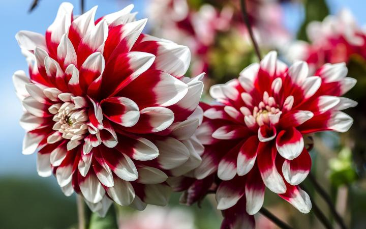

|  |

|

|
In the summer of 1973 sunflowers appeared in my father's vegetable garden. They seemed to sprout overnight in a few rows he had lent that year to new neighbors from California. Only six years old at the time, I was at first put off by these garish plants. Such strange and vibrant flowers seemed out of place among the respectable beans, peppers, spinach, and other vegetables we had always grown. Gradually, however, the brilliance of the sunflowers won me over. Their fiery halos relieved the green monotone that by late summer ruled the garden. I marveled at birds that clung upside down to the shaggy, gold disks, wings fluttering, looting the seeds. Sunflowers defined flowers for me that summer and changed my view of the world.
Today flowering plant species outnumber by twenty to one those of ferns and cone-bearing trees, or conifers, which had thrived for 200 million years before the first bloom appeared. As a food source flowering plants provide us and the rest of the animal world with the nourishment that is fundamental to our existence. In the words of Walter Judd, a botanist at the University of Florida, "If it weren't for flowering plants, we humans wouldn't be here."